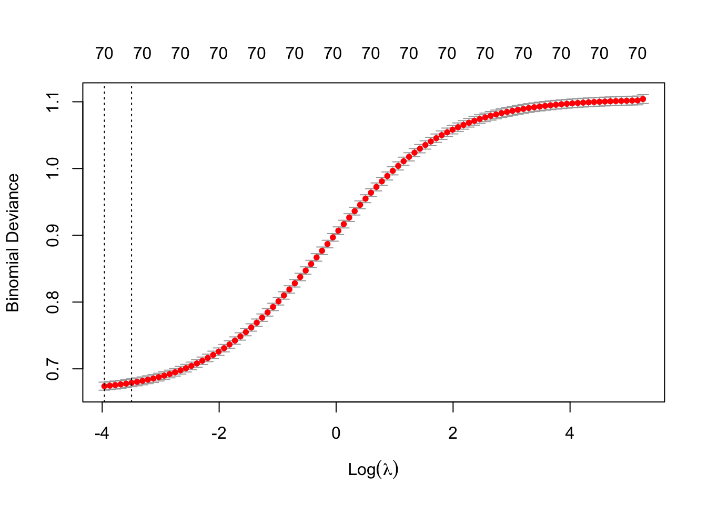
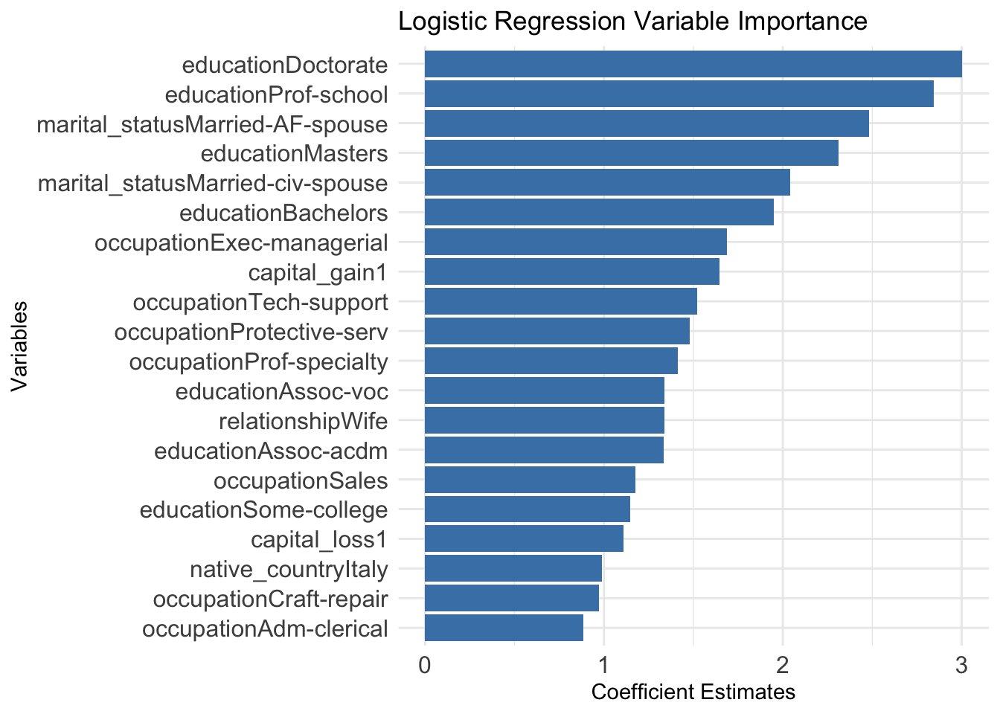

Goal
In this post I use different statistical models for predicting whether a person’s annual income will exceed $50K a year based on data in the “Census Income” data set.
Code
# Load the necessary libraries
# car: VIF factor
# caret: confusionMatrix
# naniar: missing values
# e1071: support vector classifier
# ROCR: ROC curves
pacman::p_load("qgg", "corrplot", "ggplot2", "tidyr", "mlbench",
"readr", "data.table", "naniar", "car", "caret",
"xgboost", "dplyr", "Matrix", "e1071", "glmnet",
"ROCR", "pROC", "kableExtra")The focus of this post is to determine which statistical model gives the best prediction of this binary outcome. I will compare logistic regression, XGBoost and the Support Vector Classifier models for their accuracy and precision in predicting the outcome. I will not spend a lot of time on explorative data analysis.
Data
The data as well as information about the dataset can be found here.
Code
# Download the Adult data
url <- "https://archive.ics.uci.edu/static/public/2/adult.zip"
destfile <- tempfile()
exdir <- tempdir()
download.file(url=url, destfile=destfile)
unzip(destfile, exdir=exdir)
# I am not showing the output of the following. It is not pretty to look at, but helps me identify the files downloaded in the zipped file.
list.files(exdir, full.names = TRUE) The Adult data comes in a train and test set, so no need to partition the data into a training and test set.
Code
# Read the train and test data sets
df_train <- fread(file.path(exdir,"adult.data"), data.table=FALSE)
df_test <- fread(file.path(exdir,"adult.test"), skip=1, data.table=FALSE)The variable names are given in the description of the data on the website. I added them manually.
Code
colnames(df_train) <- c("age", "workclass", "fnlwgt", "education", "education_num",
"marital_status", "occupation", "relationship", "race",
"sex", "capital_gain", "capital_loss", "hours_per_week",
"native_country", "income")
colnames(df_test) <- c("age", "workclass", "fnlwgt", "education", "education_num",
"marital_status", "occupation", "relationship", "race",
"sex", "capital_gain", "capital_loss", "hours_per_week",
"native_country", "income")
# Look at the structure of the data frames
str(df_train)
str(df_test)
dim(df_train)
# Clean the test dataset income column by remove the "."
# Use fixed=TRUE to treat it as a literal string, and not a regular expression:
df_test$income <- gsub(".", "", df_test$income, fixed=TRUE)The data consists of 15 variables. The training data consists of 32561 observations and the test data of 16281.
Here is a quick view of what the data looks like.
Code
head(df_train) age workclass fnlwgt education education_num marital_status
1 39 State-gov 77516 Bachelors 13 Never-married
2 50 Self-emp-not-inc 83311 Bachelors 13 Married-civ-spouse
3 38 Private 215646 HS-grad 9 Divorced
4 53 Private 234721 11th 7 Married-civ-spouse
5 28 Private 338409 Bachelors 13 Married-civ-spouse
6 37 Private 284582 Masters 14 Married-civ-spouse
occupation relationship race sex capital_gain capital_loss
1 Adm-clerical Not-in-family White Male 2174 0
2 Exec-managerial Husband White Male 0 0
3 Handlers-cleaners Not-in-family White Male 0 0
4 Handlers-cleaners Husband Black Male 0 0
5 Prof-specialty Wife Black Female 0 0
6 Exec-managerial Wife White Female 0 0
hours_per_week native_country income
1 40 United-States <=50K
2 13 United-States <=50K
3 40 United-States <=50K
4 40 United-States <=50K
5 40 Cuba <=50K
6 40 United-States <=50KAlthough I didn’t want to spend too much time on explorative data analysis, I couldn’t help looking at the income difference between men and women. (Just for fun I created the graph in Tableau.) The figure shows exactly what I expected: that the proportion of females earning more than $50K would be much lower than the proportion of males. The figure also shows that there is class imbalance in the dataset, since the class income > $50K occurs less frequent than the other.

The figure below shows the distribution of ages for people earning more or less than $50,000 per year. There is a clear shift towards older age for earning above $50K. The curve suggests that in 1994 middle-aged individuals were more likely to have incomes above $50K.
Code
# dev.off()
# To see the age range where people are more likely to fall into a particular income bracket:
ggplot(df_train, aes(x = age, fill = income)) +
geom_density(alpha = 0.7) +
labs(
title = "Age distribution by income group",
X = "Age", Y = "Density"
) +
scale_fill_manual(values = c("<=50K" = "#4E7AA7", ">50K" = "#E49343")) +
theme_minimal() +
theme(
panel.grid.major = element_blank()
#,
#panel.grid.minor = element_blank()
) +
labs(title = "Age Distribution by Income Group",
x = "Age", y = "Density")
Data preparation
Join the training and test datasets so that I can edit the datasets as a whole.
Code
# Change the character variables to factors
df <- rbind(df_train,df_test)
character_vars <- lapply(df, class) == "character"
str(df)Even though the website mentions missing data, there does not seem to be missing data in the train and test sets.
Code
# colSums(is.na(df_train))
# colSums(is.na(df_test))
colSums(is.na(df))There are duplicates in the data, but it is not unlikely that more than one person could have the same entries for the different variables in this dataset.
Code
any(duplicated(df))
sum(duplicated(df) | duplicated(df, fromLast = TRUE))Look at the distribution of the numerical columns by making box plots.
Code
# Identify numeric colummns
# Create a boxplot of each numeric column
numeric_columns <- df[, sapply(df, is.numeric)]
par(mfrow = c(2, 3))
lapply(names(numeric_columns), function(col) {
boxplot(numeric_columns[[col]], main = col, ylab = col)
})Code
par(mfrow = c(1, 1))A closer look at the distribution of the capital_gain and capital_loss variables shows that their distribution is highly skewed to the right, with the majority of observations being zero. There are a few extreme outliers that are inflating the mean.
Code
# Summary of capital_gain and capital_loss
cat("Summary of Capital Gain:\n")Summary of Capital Gain:Code
summary(df$capital_gain) Min. 1st Qu. Median Mean 3rd Qu. Max.
0 0 0 1079 0 99999 Code
cat("\nSummary of Capital Loss:\n")
Summary of Capital Loss:Code
summary(df$capital_loss) Min. 1st Qu. Median Mean 3rd Qu. Max.
0.0 0.0 0.0 87.5 0.0 4356.0 I decide to change these variables to binary variables instead, where any value above zero is assigned “1” otherwise “0”.
Code
df$capital_gain <- ifelse(df$capital_gain > 0, 1, 0)
df$capital_gain <- as.factor(df$capital_gain)
df$capital_loss <- ifelse(df$capital_loss > 0, 1, 0)
df$capital_loss <- as.factor(df$capital_loss)I check for covariance between variables (correlated features) and variables with very low variance (below 1e-5).
The highest correlation is observed between hours_per_week and education_num with a value of 0.148.
Code
## Look at covariance between variables
# Select numerical features in the training data
num_vars <- sapply(df_train, is.numeric)
# Compute correlation matrix for numerical variables
# None of the variables appear to be highly correlated
cor_matrix <- cor(df_train[, num_vars], use = "complete.obs")
cor_matrix
# Visualize correlations with a heatmap
corrplot(cor_matrix, method = "color", tl.cex = 0.7)Code
## Look at the variance of numerical variables
# Calculate variance for each numeric column
variances <- apply(df_train[, num_vars], 2, var)
# Find features with low variance (e.g., variance close to 0)
low_variance_features <- names(variances[variances < 1e-5])
## Check for variables consisting of a single value
single_value_check <- sapply(df_train, function(x) length(unique(x)) == 1)The number of observations for the different outcomes for predictor variable classes is important. It is preferable to have at least 10 observations for each level of the outcome variable for each of the predictor variable categories.
Code
## Look at the number of observations for different classes of categorical variables
sapply(df_train[,character_vars], table)
# Create contingency tables between each character variable and df$income
character_vars_pred <- setdiff(names(df_train)[sapply(df_train, is.character)], "income")
contingency_tables <- lapply(character_vars_pred, function(var) {
table(df_train[[var]], df_train$income)
})
# Name each table by the character variable
names(contingency_tables) <- character_vars_pred
# View the contingency tables
contingency_tablesI decide to combine some of the categories for the variables workclass, education, occupation and native_country. These variables are edited as follows:
workclass
Working Without_pay and Never_worked is very unlikely to result in an income above >50K. I am merging these categories with the category “?”.
Code
df$workclass[df$workclass %in% c("Without-pay", "Never-worked")] <- "?"
table(df$income, df$workclass)education
Add Preschool, and the other grades up to 9th grade and call it pre-primary-school.
Code
df$education[df$education %in% c("Preschool", "1st-4th", "5th-6th", "7th-8th", "9th")] <- "pre-primary-school"
table(df$income, df$education)occupation
Move Armed-Forces and Priv-house-serv to “?”
Code
df$occupation[df$occupation %in% c("Armed-Forces", "Priv-house-serv")] <- "?"
table(df$income, df$occupation)native_country
Move all countries with that have less than 10 observations in the training data to a new category called “Other”.
Code
# Create a contingency table of income and native_country
contingency_table_native_country <- table(df_train$income, df_train$native_country)
# Find the native_country categories with fewer than 10 observations in any income row
low_count_country <- apply(contingency_table_native_country, 2, function(x) any(x < 10))
# Extract the countries that meet the condition
low_count_countries <- names(low_count_country[low_count_country])
# Move all low count countries to a new category "other"
df$native_country[df$native_country %in% low_count_countries] <- "Other"Other minor adjustments: Create a binary variable for income,
Code
df$income <- ifelse(df$income == ">50K", 1, 0)
df$income <- as.factor(df$income)and change all character variables to factors.
Code
df[, character_vars] <- lapply(df[, character_vars], as.factor)
# Save the full dataframe at this point.
# saveRDS(df, file = "posts/classification_adult_data/data/df_adult_edited.rds")Create the train and test datasets.
Code
# Define train and test data indices
train <- 1:nrow(df_train)
# Add the number of rows in the test data to each row number of the training data in order to generate and index for the rows of the test data frame.
test <- (1:nrow(df_test))+ nrow(df_train)
# Create train and test datasets
df_train <- df[train, ]
df_test <- df[test, ]Analysis
I decided not to address the class-imbalance in these initial analyses. Due to the class imbalance I expect that the models may have low sensitivity, or in other words, struggle to correctly identify the minority class (in this case where income > 50K). I will therefore explicitly compare the sensitivity between the different models.
Since the data contain a traning and test dataset, I decided to use the validation set approach for cross-validation. Thus, for each of the analyses, I fit the model on the training data and assess the model’s performance on the test data.
Logistic Regression
I first fit a logistic regression model, including all the variables in the dataset. There are some variables that have a significant influence on whether a person’s annual income is above $50K per year.
The variable education_num has a high variable inflation factor (VIF). It is likely highly correlated with the factor variable education. This variable is removed in subsequent analyses.
After removing the education_num variable, education becomes significant. The workclass variable does not seem to have a significant influence on the outcome. A Chi2 test also reveals a significant association between the variables workclass and occupation. I remove this variable to see if it would improve the prediction model.
Code
### Models
## Model 1 (formula 1 = f1): include all variables
# R by default assigns the higher factor level as the positive class
glmf1 <- income ~ .
fit_glmf1 <- glm(glmf1, data = df_train, family = "binomial")
# Look at the summary
summary(fit_glmf1)
# Use the function alias to see if there may be collinearities in the data. It looks like there are none.
alias(fit_glmf1)
# The variance inflation factor of education_num is very high. I will remove education_num for subsequent analyses
vif(fit_glmf1)
## Model 2
# Based on AUC and precision, this model is the best of the logistic regression models
glmf2 <- income ~ . -education_num
fit_glmf2 <- glm(glmf2, data = df_train, family = "binomial")
summary_glmf2 <- summary(fit_glmf2)
# Looking at the variance inflation factor, it looks like there is no more problematic multicollinearity, since none of the adjusted VIF factors are above 5. Although there could be moderate multicollinearity between the variables relationship, marital_status and sex.
vif(fit_glmf2)
# Take a look at independence between workclass and occupation variables.
# It could be worth dropping one of these variables, as the Chi-square test shows significant association between them.
chisq.test(table(df_train$workclass, df_train$occupation))
## Model 3
glmf3 <- income ~ . -education_num -workclass
fit_glmf3 <- glm(glmf3, data = df_train, family = "binomial")
summary(fit_glmf3)
vif(fit_glmf3)Make predictions using logistic regression Model 2 and Model 3 and determine model performance in the test data.
Code
# Predict the probabilities using the logistic regression models
probs_glmf2 <- predict(fit_glmf2, newdata = df_test, type = "response")
probs_glmf3 <- predict(fit_glmf3, newdata = df_test, type = "response")
## Predict the class based on the calculated probabilities
# Set predicted class to ">50K" for observations with probabilities greater than 0.5
pred_glmf2 <- rep("0", 16281)
pred_glmf2[probs_glmf2 > 0.5] <- "1"
table(pred_glmf2, df_test$income)
pred_glmf3 <- rep("0", 16281)
pred_glmf3[probs_glmf3 > 0.5] <- "1"
table(pred_glmf3, df_test$income)
## Create confusion matrices to determine accuracy, sensitivity etc.
confmatrix_glmf2 <- confusionMatrix(table(pred_glmf2, df_test$income), positive = "1")
confmatrix_glmf3 <- confusionMatrix(table(pred_glmf3, df_test$income), positive = "1")
# Extract different metrics for model performance
# Specificity = TN/(TN + FP)
# Accuracy = TP + TN/(TP + TN + FP + FN)
# Precision = TP/(TP + FP)
# Precision is given as "Pos Pred Value" in the caret package
specificity_glmf2 <- confmatrix_glmf2$byClass["Specificity"]
sensitivity_glmf2 <- confmatrix_glmf2$byClass["Sensitivity"]
accuracy_glmf2 <- as.numeric(confmatrix_glmf2$overall["Accuracy"])
precision_glmf2 <- round(as.numeric(confmatrix_glmf2$byClass["Pos Pred Value"]), 3)
specificity_glmf3 <- confmatrix_glmf3$byClass["Specificity"]
accuracy_glmf3 <- as.numeric(confmatrix_glmf3$overall["Accuracy"])
precision_glmf3 <- round(as.numeric(confmatrix_glmf3$byClass["Pos Pred Value"]), 3)
# Calculate the area under the curve
# The predicted outcome must be numeric
y <- as.numeric(df_test$income)-1
roc_glmf2 <- roc(y, probs_glmf2)
auc_glmf2 <- roc_glmf2$auc
roc_glmf3 <- roc(y, probs_glmf3)
auc_glmf3 <- roc_glmf3$auc
# Quick comparison between the AUC and precision of the two models.
# Model 2 show the best model performance.
print(c(auc_glmf2, auc_glmf3))
print(c(confmatrix_glmf2$byClass["Pos Pred Value"], confmatrix_glmf3$byClass["Pos Pred Value"]))
# Use the prediction function from the ROCR package to create a prediction object. This will be used later to create an ROC graph
# Create a performance object for the ROC curve
# tpr = true positive rate, fpr = false positive rate
pred_object_glmf2 <- prediction(probs_glmf2, df_test$income)
perf_glmf2 <- performance(pred_object_glmf2, "tpr", "fpr")
auc_glmf2 <- performance(pred_object_glmf2, measure = "auc")@y.values[[1]]Take a look at which coefficients are most important for making the prediction.
Code
# Look at the coefficients of model 2
# Extract coefficients (includes estimates, standard errors, etc.) for model 2
# To order the coefficients by their absolute estimate size:
coefficients_glmf2 <- summary_glmf2$coefficients
ordered_by_estimate <- coefficients_glmf2[order(abs(coefficients_glmf2[, "Estimate"]), decreasing = TRUE), ]
# Create a dataframe of variable names and estimates
# Use the original estimates, not absolute values
importance_glmf2 <- data.frame(
Variable = rownames(ordered_by_estimate),
Estimate = ordered_by_estimate[, "Estimate"]
)
# Remove the intercept from the dataframe
# Subset to the top 20 estimates (after removing intercept)
importance_glmf2_no_intercept <- importance_glmf2[rownames(importance_glmf2) != "(Intercept)", ]
importance_glmf2_top20 <- importance_glmf2_no_intercept[1:20, ]
# Plot top 20 absolute largest estimates
# Flip coordinates to make the plot horizontal
importance_plot_glm <- ggplot(importance_glmf2_top20, aes(x = reorder(Variable, abs(Estimate)), y = Estimate)) +
geom_bar(stat = "identity", aes(fill = ifelse(Estimate > 0, "Positive", "Negative"))) +
coord_flip() +
labs(title = "Logistic Regression Variable Importance",
x = "Variables",
y = "Coefficient Estimates") +
theme_minimal() +
# Define custom colors for positive (blue) and negative (orange)
scale_fill_manual(values = c("Negative" = "darkorange", "Positive" = "steelblue"), guide = "none") +
theme(axis.text.x = element_text(size = 12),
axis.text.y = element_text(size = 12))Ridge Regression
I suspect that there may still be some correlated features in the data, such as relationship and marital_status. I use Ridge regression to distribute the weight more evenly across the features. The goal of this exercise is to determine which model will give the best prediction accuracy. Thus, model simplicity is not the biggest concern.
To do Ridge regression the data needs to be converted to a model matrix.
Code
# Create a model matrix using the model.matrix() function, which converts factors into dummy variables and represent all predictor variables in a matrix format.
# model.matrix() is used to one-hot encode categorical variables - i.e. each category for each categorical variable becomes a binary variable coded 0/1.
# Remove the intercept, because model.matrix() by default includes an intercept column.
matrix_train <- model.matrix(income ~ . -1 -education_num, data = df_train)
y_train <- df_train$income
matrix_test <- model.matrix(income ~ . -1 -education_num, data = df_test)
y_test <- df_test$incomeI do cross-validation to determine the best Lambda value for training the model. The trained model is used to make predictions in the test data. I decide to use the lambda that gives the minimum binomial deviance.
Code
# Fit Ridge regression (alpha = 0 means Ridge in glmnet)
fit_ridge <- glmnet(matrix_train, y = y_train, family = "binomial", alpha = 0)
# Print a summary of the model
print(fit_ridge)
# Use cross-validation to find the best lambda (regularization parameter)
cv_ridge <- cv.glmnet(matrix_train, y_train, family = "binomial", alpha = 0)
# Plot the cross-validation results
plot(cv_ridge)
Code
# Find the best lambda that minimizes the cross-validated error
best_lambda <- cv_ridge$lambda.min
# Refit the model using the best lambda
fit_ridge_best <- glmnet(matrix_train, y_train, family = "binomial", alpha = 0, lambda = best_lambda)
# Make predictions on the test set
probs_ridge_best <- predict(fit_ridge_best, matrix_test, type = "response")
# Convert probabilities to class predictions.
pred_ridge <- ifelse(probs_ridge_best > 0.5, 1, 0)
## Create a confusion matrix to evaluate peformance
confmatrix_ridge <- confusionMatrix(table(pred_ridge, y_test), positive = "1")
# Extract performance metrics
specificity_ridge <- confmatrix_ridge$byClass["Specificity"]
sensitivity_ridge <- confmatrix_ridge$byClass["Sensitivity"]
accuracy_ridge <- as.numeric(confmatrix_ridge$overall["Accuracy"])
precision_ridge <- round(as.numeric(confmatrix_ridge$byClass["Pos Pred Value"]), 3)
# Use the prediction function from the ROCR package to create a prediction object. This will be used later to create an ROC graph
# Create a performance object for the ROC curve
# tpr = true positive rate, fpr = false positive rate
# Calculate the AUC (Area Under the Curve)
pred_object_ridge <- prediction(probs_ridge_best, df_test$income)
perf_ridge <- performance(pred_object_ridge, "tpr", "fpr")
auc_ridge <- performance(pred_object_ridge, measure = "auc")@y.values[[1]]I determine the importance of the variables in this model.
Code
# Extract coefficients for plotting variable importance
# Extract the coefficients for the best lambda
coefficients_ridge <- coef(fit_ridge_best, s = best_lambda)
# Convert the coefficient matrix to a data frame for easier plotting
coefficients_ridge_df <- as.data.frame(as.matrix(coefficients_ridge))
coefficients_ridge_df$Variable <- rownames(coefficients_ridge_df)
colnames(coefficients_ridge_df) <- c("Coefficient", "Variable")
# Remove the intercept from the plot (optional)
coefficients_ridge_df <- coefficients_ridge_df[coefficients_ridge_df$Variable != "(Intercept)", ]
# Sort the data frame by the absolute value of the coefficients and select the top 20
coefficients_ridge_top_20 <- coefficients_ridge_df %>%
arrange(desc(abs(Coefficient))) %>%
head(20)
# Plot the top 20 coefficients for Ridge regression
importance_plot_ridge <- ggplot(coefficients_ridge_top_20, aes(x = reorder(Variable, abs(Coefficient)), y = Coefficient)) +
geom_bar(stat = "identity", aes(fill = ifelse(Coefficient > 0, "Positive", "Negative"))) +
coord_flip() +
labs(title = "Ridge Regression Variable Importance",
x = "Variables", y = "Coefficient") +
theme_minimal() +
scale_fill_manual(values = c("Negative" = "darkorange", "Positive" = "steelblue"), guide = "none") +
theme(axis.text.x = element_text(size = 12),
axis.text.y = element_text(size = 12))XGBoost
XGBoost is a tree-based algorithm and therefore should not be particularly sensitive to collinear features.
XGBoost requires numerical inputs so I use the model matrices created for Ridge Regression to create a DMatrix, which is XGBoost’s optimized data structure.
Code
# Create a training and test label for the outcome variable
y_train_label <- as.numeric(df_train$income)-1
y_test_label <- as.numeric(df_test$income)-1
# Convert the data to DMatrix, which is XGBoost's optimized data structure
train_xgb <- xgb.DMatrix(data = matrix_train, label = y_train_label)
test_xgb <- xgb.DMatrix(data = matrix_test, label = y_test_label)For this XGBoost model I choose parameters that should provide a good balance between model complexity and regularization. I am not going to use time on tuning this model.
Code
# Set a seed for reproducibility
set.seed(123)
# Set the XGBoost parameters
params <- list(
booster = "gbtree",
objective = "binary:logistic",
eta = 0.1, # learning rate
max_depth = 6,
gamma = 1,
subsample = 0.8,
colsample_bytree = 0.8,
eval_metric = "error"
)
# Train the model
# Prevent the output from being printed in the rendered html document by using invisible()
invisible({
fit_xgb1 <- xgb.train(
params = params,
data = train_xgb,
nrounds = 100,
watchlist = list(train = train_xgb, eval = test_xgb),
early_stopping_rounds = 10,
print_every_n = 10
)
})Make predictions using the XGBoost model and determine model performance.
Code
## Make predictions
probs_xgb1 <- predict(fit_xgb1, newdata = test_xgb)
pred_xgb1 <- ifelse(probs_xgb1 > 0.5, 1, 0)
# Confusion matrix to obtain model performance
# Recap: sensitivity is the recall for the positive class
# Recap: specificity is the recall for the negative class
confmatrix_xgb1 <- confusionMatrix(factor(pred_xgb1), factor(y_test_label), positive = "1")
sensitivity_xgb1 <- confmatrix_xgb1$byClass["Sensitivity"]
specificity_xgb1 <- confmatrix_xgb1$byClass["Specificity"]
precision_xgb1 <- round(as.numeric(confmatrix_xgb1$byClass["Pos Pred Value"]), 3)
# Use the prediction function from the ROCR package to create a prediction object. This will be used later to create an ROC graph
# Create a performance object for the ROC curve
# tpr = true positive rate, fpr = false positive rate
# Calculate the AUC (Area Under the Curve)
pred_object_xgb <- prediction(probs_xgb1, y_test_label)
perf_xgb <- performance(pred_object_xgb, "tpr", "fpr")
auc_xgb <- performance(pred_object_xgb, measure = "auc")@y.values[[1]]As for the other models, I determine the importance of the different variables.
Code
# Feature importance
importance_xgb <- xgb.importance(feature_names = colnames(train_xgb), model = fit_xgb1)
# Prepare a plot of the top 20 most important features
# This function (with a ggplot-backend) performs 1-D clustering of the importance values.
# Clusters with similar importance values get the same bar colours.
importance_plot_xgb <- xgb.ggplot.importance(importance_matrix = importance_xgb,
top_n = 20, n_clusters = 5) +
theme_minimal() +
theme(
axis.text.x = element_text(size = 12),
axis.text.y = element_text(size = 12),
plot.title = element_text(size = 14)
) +
ggtitle("XGBoost Variable Importance")Support Vector Classifier
The support vector classifier (SVC) is a method that constructs a set of hyperplanes that separates the training data into two classes.
I perform regularization by adjusting the cost tuning parameter (C), which allows changing the number and severity of the violations to the margin. A smaller C value increases the margin size by allowing more violations, while a larger C value reduces the margin and penalizes misclassifications more severely.
The best value for the cost tuning parameter (C) is determined through cross validation.
Code
# Train the SVC model at different values of the C tuning parameter
# I use the built-in tune() function in the e1071 library
# Train an SVM model with a linear kernel - corresponds to support vector classifier (SVC)
# I explicitly remove education_num from the data frame, since with first run, just defining the formula, is not sufficient for excluding it from the model.
# Remove education_num from the dataset before fitting the model
df_train_svc <- df_train[, !colnames(df_train) %in% c("education_num")]
df_test_svc <- df_test[, !colnames(df_test) %in% c("education_num")]
svcf1 <- income ~.
set.seed(123)
# Script for finding the optimal cost parameter through cross validation
tune_svc <- tune(svm, svcf1, data = df_train, kernel = "linear",
ranges = list(cost = c(0.001, 0.1, 1, 10)))
# This computation takes quite some time, so I am saving the results.
# saveRDS(tune_svc, file = "posts/classification_adult_data/tune_svc.rds")Since the cross-validation for different values takes quite some time, I save the results for easy loading. I use the cost value that gives the smallest error for subsequent predictions.
Code
#tune_svc <- readRDS("~/Dropbox/GitHub/Portfolio/posts/classification_adult_data/tune_svc.rds")
tune_svc <- readRDS("tune_svc.rds")
summary(tune_svc)
# Extract the best model
bestmod_svc <- tune_svc$best.model
# Predict the class and probabilities using the best model
pred_svc <- predict(bestmod_svc, df_test, decision.values = TRUE)
## Create confusion matrix to evaluate the model's performance
# Extract accuracy, precision, sensitivity and specificity
confmatrix_svc <- confusionMatrix(pred_svc, df_test$income, positive = "1")
accuracy_svc <- as.numeric(confmatrix_svc$overall["Accuracy"])
precision_svc <- round(as.numeric(confmatrix_svc$byClass["Pos Pred Value"]), 3)
specificity_svc <- confmatrix_svc$byClass["Specificity"]
sensitivity_svc <- confmatrix_svc$byClass["Sensitivity"]
## ROC curve
# Extract the decision values (distance from the decision boundary)
decision_values_svc <- attributes(pred_svc)$decision.values
# Use ROCR package to plot the ROC curve
# Create a prediction object using decision values and true labels
# Use the negative of the fitted decision values so that negative values correspond to class 1 and the positive values to class 2 (ISLR p. 395).
# Create a performance object for the ROC curve
# Calculate the AUC (Area Under the Curve)
pred_object_svc <- prediction(-decision_values_svc, y_test_label)
perf_svc <- performance(pred_object_svc, "tpr", "fpr")
auc_svc <- performance(pred_object_svc, measure = "auc")@y.values[[1]]Determine the importance of the variables in this model.
Code
# Determine the importance of the different variables in the model
# Extract the coefficients (weights) and support vectors, multiplying them gives the final coefficient (weight) for each feature in the decision boundary.
svc_coefficients <- t(bestmod_svc$coefs) %*% bestmod_svc$SV
# Extract the coefficients and the names
svc_coeff_values <- as.vector(svc_coefficients)
variable_names <- dimnames(svc_coefficients)[[2]]
# Combine the names and coefficients into a named vector
# Remember that in this case:
# Positive coefficients (in the output from my SVM model) will push the decision toward the negative class.
# Negative coefficients will push the decision toward the positive class.
svc_coefficients_named <- setNames(-svc_coeff_values, variable_names)
# Sort the coefficients by their absolute values, keeping the names intact
# Select the top 20 largest estimates (based on absolute values)
svc_coefficients_ordered <- svc_coefficients_named[order(abs(svc_coefficients_named), decreasing = TRUE)]
importance_svc_top20 <- svc_coefficients_ordered[1:20]
# Convert the named vector of top 20 into a dataframe for plotting
importance_svc_top20 <- data.frame(
Variable = names(importance_svc_top20),
Coefficient = importance_svc_top20
)
# Create a bar plot with the actual values (not the absolute ones)
importance_plot_svc <- ggplot(importance_svc_top20, aes(x = reorder(Variable, abs(Coefficient)), y = Coefficient)) +
geom_bar(stat = "identity", aes(fill = ifelse(Coefficient > 0, "Positive", "Negative"))) +
coord_flip() +
labs(title = "SVC Variable Importance",
x = "Variables",
y = "Coefficient Value") +
theme_minimal() +
scale_fill_manual(values = c("Negative" = "darkorange", "Positive" = "steelblue"), guide = "none") +
theme(axis.text.x = element_text(size = 12),
axis.text.y = element_text(size = 12))Results
The main goal of this post is to identify which statistical method performs best in predicting annual income in the adult census data. Nevertheless, I still think it is interesting to look at the variable importance across the different methods.
The figures below show the 20 most important variables in the different methods used.
Code
importance_plot_glm
importance_plot_ridge
importance_plot_xgb
importance_plot_svc
The figure below shows the ROC curves and AUC for the different methods. The ROC curves are very similar across the different methods, with XGBoost achieving the highest AUC, however just slightly higher than the other methods.
Code
plot(perf_glmf2, col = "blue", main = "ROC Curves", lwd = 0.8)
plot(perf_ridge, col = "purple", lwd = 0.8, add = TRUE)
plot(perf_xgb, col = "red", lwd = 0.8, add = TRUE)
plot(perf_svc, col = "green", lwd = 0.8, add = TRUE)
# Add a legend to the plot with AUC values
legend("bottomright",
legend = c(paste("Logistic Regression AUC:", round(auc_glmf2, 3)),
paste("Ridge Regression AUC:", round(auc_ridge, 3)),
paste("XGBoost AUC:", round(auc_xgb, 3)),
paste("SVM AUC:", round(auc_svc, 3))),
col = c("blue", "purple", "red", "green"),
lwd = 2)The following table shows the performance of the different methods used as measured by the metrics sensitivity, specificity and precision. The results are sorted by precision, with the method achieving the highest precision (XGBoost) shown as the first row in the table.
Code
# Collect all the results in a data frame
results <- data.frame(
Method = c("Logistic Regression", "Ridge Regression", "XGBoost", "Support Vector Classifier"),
Sensitivity = c(sensitivity_glmf2, sensitivity_ridge, sensitivity_xgb1, sensitivity_svc),
Specificity = c(specificity_glmf2, specificity_ridge, specificity_xgb1, specificity_svc),
Precision = c(precision_glmf2, precision_ridge, precision_xgb1, precision_svc)
)
# Order the results by Precision in descending order
results <- results[order(-results$Precision), ]
# Round the values for a clean display
results[, 2:4] <- round(results[, 2:4], 3)
results %>%
kable("html", row.names = FALSE, caption = "Model Comparison Metrics") %>%
kable_styling(full_width = FALSE, bootstrap_options = c("striped", "hover", "condensed")) %>%
column_spec(1, bold = TRUE)| Method | Sensitivity | Specificity | Precision |
|---|---|---|---|
| XGBoost | 0.587 | 0.936 | 0.740 |
| Ridge Regression | 0.555 | 0.935 | 0.726 |
| Support Vector Classifier | 0.575 | 0.931 | 0.722 |
| Logistic Regression | 0.585 | 0.926 | 0.710 |
Discussion
Whereas logistic regression can give important information for making inferences about the importance of the different variables and their effects, XGBoost and the SVC are not designed for making direct inferences. XGBoost and the SVC are primarily predictive models that focus on maximizing predictive accuracy. However, SVC did not outperform the relatively simple logistic regression model for this task. I would not use the support vector classifier for this analysis, since it took a long time to run and did not outperform the other models on the different model metrics.
It is clear that the class imbalance in the outcome variable has a big influence on the model performance, with all methods struggling to recall the positive class. The highest sensitivity achieved is 58.7% observed in the XGBoost model. Remember that some of the categorical variables have levels with relatively few observations, which may reduce a model’s ability to accurately learn patterns associated with those levels. It may therefore make sense that XGBoost showed the best performance, since tree-based models can handle rare categories better.
Skills
Statistical learning, machine learning, R-programming, Tableau and data visualization.
References:
Becker, Barry and Kohavi, Ronny. (1996). Adult. UCI Machine Learning Repository. https://doi.org/10.24432/C5XW20.
James, G., Witten, D., Hastie, T. og Tibshirani, R. 2021. An Introduction to Statistical Learning (ISLR): with Applications in R. Available at: https://link.springer.com/content/pdf/10. 1007/978-1-0716-1418-1.pdf.